Места по типу · данные на 24 ноября
Рестораны Москвы: где поужинать
В каталоге 246 ресторанов и кафе: 28 недорогих (примерно до 1 500 ₽ на человека) и 101 — для особого случая, 19 из гида Michelin 2021. 191 место в центре, остальные — по 11 округам Москвы и Подмосковья. Для многих есть готовые планы: прогулка до ужина или бар после.
- 246 мест
- 222 плана
- 12 округов
Рестораны 40 из 246
Большой Афанасьевский пер., 14
Новое
Кафе при «Доме предпринимателей» у Кропоткинской: завтраки в любое время, сырники, каши, сэндвичи и витрина с выпечкой и печеньем.
Подробнее и маршрут: FinchПозвать сюда: Finch
Фото здания: Александр Сигачёв, CC BY-SA 4.0 · Wikimedia Commons
Страстной бул., 8А
Две звезды Michelin 2021
Фермерские продукты и вид на центр с седьмого этажа.
Подробнее и маршрут: Twins GardenПозвать сюда: Twins Garden
Фото: Tamara Ivanova-Issayeva, CC BY-SA 4.0 · Wikimedia Commons
ул. Пятницкая, 42
Отель-ресторан с садом, вермутерией и галереей в Замоскворечье. 9–00.
Подробнее и маршрут: РихтерПозвать сюда: Рихтер
Фото здания: Kemal KOZBAEV, CC BY-SA 4.0 · Wikimedia Commons
Театральный пр., 2
Звезда Michelin 2021
Современная русская кухня Андрея Шмакова в «Метрополе».
Подробнее и маршрут: СавваПозвать сюда: Савва
Фото: A.Savin, Free Art License · Wikimedia Commons
Новорязанская ул., 23, стр. 1
60 корнеров в бывшем троллейбусном депо и большая крыша-терраса. До 23, в пт–сб до 00.
Подробнее и маршрут: Три вокзала. ДепоПозвать сюда: Три вокзала. Депо
Фото: A.Savin, Free Art License · Wikimedia Commons
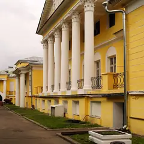
Поварская ул., 52/55, стр. 2
В гиде Michelin 2021
Премиальный итальянский ресторан Новикова в усадьбе Долгоруковых.
Подробнее и маршрут: Assunta MadreПозвать сюда: Assunta Madre
Фото: Stas Lobov, CC BY-SA 3.0 · Wikimedia Commons
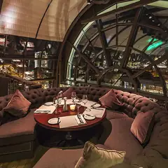
Смоленская пл., 3 (16 этаж)
Звезда Michelin 2021
Ресторан со звездой Michelin под стеклянным куполом с видом на центр. 12:00–00:00.
Подробнее и маршрут: White RabbitПозвать сюда: White Rabbit
Фото: Wikimaniawikimania, CC BY-SA 4.0 · Wikimedia Commons
Моховая ул., 15/1, стр. 1
Иммерсивный ужин-шоу в «Национале»: каждая подача — часть спектакля.
Подробнее и маршрут: КалейдоскопПозвать сюда: Калейдоскоп
Фото: A.Savin, CC BY-SA 3.0 · Wikimedia Commons
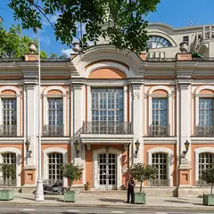
Тверской бул., 26А
Дворянская усадьба XIX века: библиотека, аптекарский зал и русская кухня. 10:00–23:00.
Подробнее и маршрут: Кафе «Пушкинъ»Позвать сюда: Кафе «Пушкинъ»
Фото: Mike1979 Russia, CC BY-SA 3.0 · Wikimedia Commons
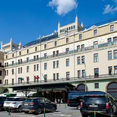
Театральный пр., 2
Парадный зал отеля «Метрополь» под витражным куполом с фонтаном. По воскресеньям с 13 до 17 — знаменитый бранч-буфет, в остальные дни утром завтраки. Для особого повода.
Подробнее и маршрут: МетропольПозвать сюда: Метрополь
Фото: Никонико962, CC BY-SA 4.0 · Wikimedia Commons
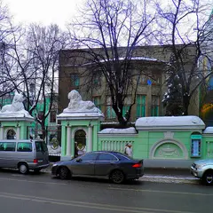
ул. Пречистенка, 16/2
Новое
Недорогой комплексный обед в парадных интерьерах исторического особняка, после него можно осмотреть дворец с экскурсией.
Подробнее и маршрут: Центральный дом учёныхПозвать сюда: Центральный дом учёных
Фото: salech hcelas, CC BY 3.0 · Wikimedia Commons
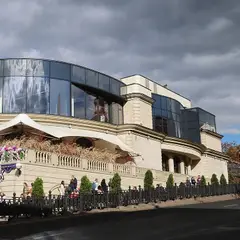
Рождественский бул., 1
65+ корнеров с кухнями мира, по четвергам–субботам вечеринки. До 23:00, в чт–сб до полуночи.
Подробнее и маршрут: Центральный рынокПозвать сюда: Центральный рынок
Фото: T3ru, CC BY-SA 4.0 · Wikimedia Commons
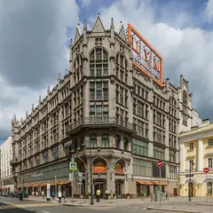
ул. Петровка, 2
В гиде Michelin 2021
Брассери на пятом этаже ЦУМа с видом на Большой театр.
Подробнее и маршрут: BURO.TSUMПозвать сюда: BURO.TSUM
Фото: A.Savin, Free Art License · Wikimedia Commons
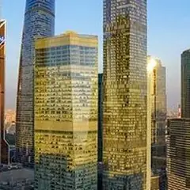
1-й Красногвардейский пр., 21, стр. 2
Русская кухня на 85-м этаже башни «ОКО» — один из самых высоких ресторанов Европы.
Подробнее и маршрут: RUSKIПозвать сюда: RUSKI
Фото: mos.ru, CC BY 4.0 · Wikimedia Commons
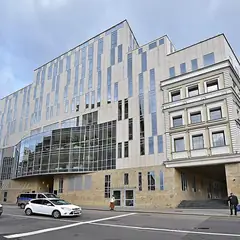
ул. Чаплыгина, 1А, стр. 1
Ресторан при «Табакерке» от Folio Group — удобно до и после спектакля.
Подробнее и маршрут: АртистПозвать сюда: Артист
Фото: mos.ru, CC BY 4.0 · Wikimedia Commons
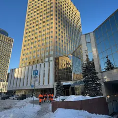
Смоленская ул., 5 (23-й этаж)
Ресторан на 23-м этаже отеля у Смоленской: за окнами высотка МИД, Арбат и огни Сити. Недёшево, но за вечерней Москвой сверху сюда и приходят.
Подробнее и маршрут: ПанорамаПозвать сюда: Панорама
Фото: Vlsr1, CC0 · Wikimedia Commons
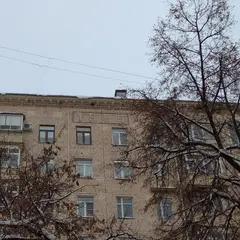
просп. Мира, 68, стр. 1А
Русская кухня на Проспекте Мира: соленья, настойки и живая атмосфера.
Подробнее и маршрут: РассольниковПозвать сюда: Рассольников
Фото здания: Andreykor, CC BY 4.0 · Wikimedia Commons
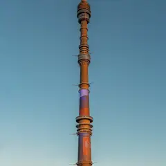
ул. Академика Королёва, 15, корп. 1
Вращающийся ресторан на Останкинской башне: за обедом вся Москва медленно проплывает за окном. Попасть можно только с билетом на смотровую площадку, бронируй заранее.
Подробнее и маршрут: Седьмое небоПозвать сюда: Седьмое небо
Фото: Klodklodklod77, CC BY-SA 4.0 · Wikimedia Commons
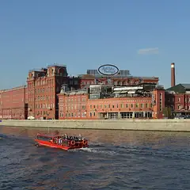
Берсеневский пер., 2, стр. 1
Ресторан на «Красном Октябре», где сыр варят прямо при гостях.
Подробнее и маршрут: СыроварняПозвать сюда: Сыроварня
Фото: Dmitry Ivanov., CC BY-SA 4.0 · Wikimedia Commons
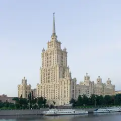
Кутузовский просп., 2/1, стр. 1
Итальянский ресторан на 29-м этаже высотки «Украина» с видом на Москву-реку.
Подробнее и маршрут: BuonoПозвать сюда: Buono
Фото: Lite, CC BY-SA 3.0 · Wikimedia Commons
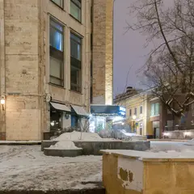
Брюсов пер., 11
Modern-бистро шефа Евгения Викентьева (ex-«Белуга») в Брюсовом переулке.
Подробнее и маршрут: Centrale BistroПозвать сюда: Centrale Bistro
Фото здания: Артём Светлов, CC BY 4.0 · Wikimedia Commons
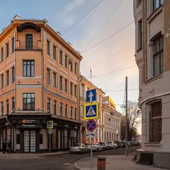
ул. Спиридоновка, 25/20, стр. 1
Днём бистро с завтраками, после 18:00 — белые скатерти и морепродукты. Для романтического ужина.
Подробнее и маршрут: Grace BistroПозвать сюда: Grace Bistro
Фото здания: Sergey Norin from Moscow, Russia, CC BY 2.0 · Wikimedia Commons
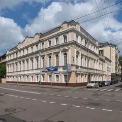
ул. Большая Никитская, 5
Гастротеатр Владимира Мухина: ужин-спектакль из многих подач вокруг икры.
Подробнее и маршрут: ikraПозвать сюда: ikra
Фото здания: NVO, CC BY-SA 3.0 · Wikimedia Commons
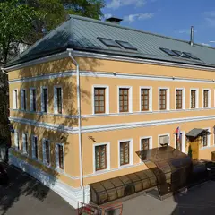
Берсеневская наб., 16, стр. 9
Ресторан у «Красного Октября» со средиземноморской кухней: с террасы и из окон виден храм Христа Спасителя за рекой. Цены высокие — место для особого вечера.
Подробнее и маршрут: LuiПозвать сюда: Lui
Фото здания: Д. Иванов., CC BY-SA 3.0 · Wikimedia Commons
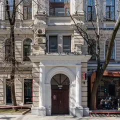
Страстной бул., 7, стр. 1
Испанский ресторан и бар Folk Team на Страстном.
Подробнее и маршрут: PadronПозвать сюда: Padron
Фото здания: Mike1979 Russia, CC BY-SA 3.0 · Wikimedia Commons
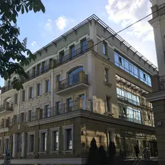
Подкопаевский пер., 4А
Ужин-спектакль с 360-градусными проекциями: семь подач — семь сцен.
Подробнее и маршрут: SVETПозвать сюда: SVET
Фото здания: Роман Балабин, CC BY-SA 3.0 · Wikimedia Commons
Весковский пер., 3
Дог-френдли мексиканское кафе с открытой кухней у Новослободской.
Подробнее и маршрут: Taco ProjectПозвать сюда: Taco Project
Фото: Stolbovsky, CC BY-SA 3.0 · Wikimedia Commons
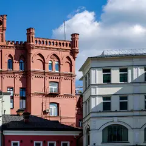
Никольская ул., 19–21
Краб, морепродукты и большая винная карта на Никольской.
Подробнее и маршрут: Wine & CrabПозвать сюда: Wine & Crab
Фото здания: Никонико962, CC BY-SA 4.0 · Wikimedia Commons
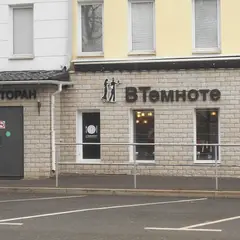
Октябрьская ул., 2
Ужин в полной темноте: обслуживают незрячие официанты, играет живая музыка. Только по записи, сеанс ~2 часа.
Подробнее и маршрут: В темноте?!Позвать сюда: В темноте?!
Фото: Олег Черкасский, CC BY-SA 4.0 · Wikimedia Commons
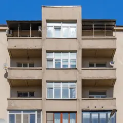
Рождественский бул., 1
Ресторан White Rabbit Family с дровяной печью и грилем.
Подробнее и маршрут: ГорынычПозвать сюда: Горыныч
Фото здания: Mike1979 Russia, CC BY-SA 3.0 · Wikimedia Commons
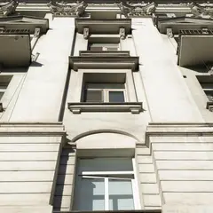
Никитский бул., 12
Классическое бистро на Никитском бульваре; каждый день с 12 до 16 — французские завтраки.
Подробнее и маршрут: Жан-ЖакПозвать сюда: Жан-Жак
Фото здания: NVO, CC BY-SA 3.0 · Wikimedia Commons
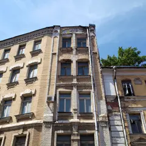
Трубная ул., 15
Домашняя итальянская кухня: чикетти, паста и пицца на тонком и толстом тесте. Чек ~1 400 ₽.
Подробнее и маршрут: Мария СантаПозвать сюда: Мария Санта
Фото здания: NVO, CC BY-SA 3.0 · Wikimedia Commons
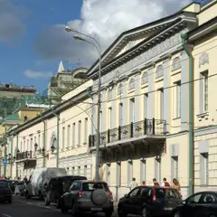
Тверской бул., 26, стр. 3
12 залов в стиле шинуазри: камины, хрусталь и гобелены. 12–00.
Подробнее и маршрут: ТурандотПозвать сюда: Турандот
Фото здания: NVO, CC BY-SA 3.0 · Wikimedia Commons
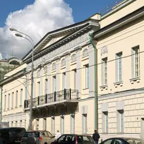
Тверской бул., 26
Гранд-кафе Деллоса в духе парижской брассери XIX века. 10–00.
Подробнее и маршрут: ШануарПозвать сюда: Шануар
Фото здания: NVO, CC BY-SA 3.0 · Wikimedia Commons
Колымажный пер., 8/4, стр. 7
Новое
Светлое минималистичное кафе при храме с завтраками и свежей выпечкой. Удобно зайти перед Пушкинским музеем.
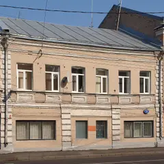
ул. Петровка, 34, стр. 1
Итальянское бистро на Петровке: паста, вино и аквариум с устрицами.
Подробнее и маршрут: Avero mioПозвать сюда: Avero mio
Фото здания: user:NVO, CC BY-SA 3.0 · Wikimedia Commons
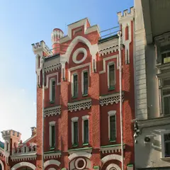
Неглинная ул., 14
Ресторан с мужским характером и британским дизайном — интерьер не похож ни на что в Москве.
Подробнее и маршрут: BrunoПозвать сюда: Bruno
Фото здания: Ludvig14, CC BY-SA 4.0 · Wikimedia Commons
Болотная наб., 15, стр. 3
Новое
Азиатский фудхолл из нескольких корнеров: Китай, Вьетнам, Япония, Бурятия, Ближний Восток, десерты и коктейли; удобно собраться компанией.
Ходынский бул., 4
Ресторан Novikov Group в «Авиапарке» с честной узбекской кухней без восточной показухи.
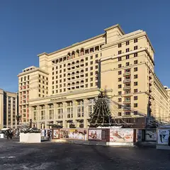
Охотный Ряд, 2
Кухня народов Сибири в двух шагах от Красной площади: сиг, чавыча и таймырский олень.
Подробнее и маршрут: ManulПозвать сюда: Manul
Фото: Alex 'Florstein' Fedorov, CC BY-SA 4.0 · Wikimedia Commons


Готовые планы с этими местами 12 из 222
- Гоголевский бульвар · Бульвар · м. Кропоткинская
- 3 минуты пешкомFinch · Кафе
Неспешная прогулка по Гоголевскому бульвару и пара минут до Большого Афанасьевского, где можно засесть за поздний завтрак и десерты.
Открыть план: Бульвар и бранч в переулкеПозвать сюда: Бульвар и бранч в переулке
Фото: Alina Vozna, CC BY-SA 4.0 · Wikimedia Commons
- Гоголевский бульвар · Бульвар · м. Кропоткинская
- 6 минут пешкомANTIПА · Кафе
Неспешно пройтись по Гоголевскому бульвару и через пять минут сесть завтракать в тихом переулке. Спокойное начало выходного дня.
Открыть план: Бульвар и поздний завтракПозвать сюда: Бульвар и поздний завтрак
Фото: Alina Vozna, CC BY-SA 4.0 · Wikimedia Commons
- Галерея «Другое дело» · Галерея в старинной усадьбе · м. Красные Ворота
- 2 минуты пешкомПублика · Ресторан
Сначала выставка в старинной усадьбе, потом через пару минут пешком — ужин с домашней кухней и вечерними коктейлями.
Открыть план: Галерея в усадьбе и ужин рядомПозвать сюда: Галерея в усадьбе и ужин рядом
Фото: Svetlov Artem, CC BY-SA 4.0 · Wikimedia Commons
- ГЭС-2 · Дом культуры · м. Кропоткинская
- 1 минута пешкомChima · Фудхолл
Выставки в ГЭС-2, а фудхолл Chima совсем рядом на Болотной — каждый выберет свою кухню.
Открыть план: ГЭС-2 и азиатский ужинПозвать сюда: ГЭС-2 и азиатский ужин
Фото: Юрий Д.К., CC BY 4.0 · Wikimedia Commons
- Chima · Фудхолл · м. Полянка
- 4 минуты пешкомKaraoke Pro · Караоке-клуб
Поужинать компанией в азиатском фудхолле и через три минуты пешком перейти в караоке.
Открыть план: Караоке и фудхоллПозвать сюда: Караоке и фудхолл
Фото здания: Никонико962, CC BY-SA 4.0 · Wikimedia Commons
- Англиканская церковь Святого Андрея · Концертный зал · м. Александровский сад
- 1 минута пешкомCentrale Bistro · Бистро
Слушаете музыку под неоготическими сводами, а ужинать идёте в бистро через минуту ходьбы. Весь вечер умещается в одном тихом переулке.
Открыть план: Концерт в церкви и бистроПозвать сюда: Концерт в церкви и бистро
Фото: salech hcelas, CC BY 3.0 · Wikimedia Commons
- Смотровая ЦДМ · Смотровая площадка · м. Кузнецкий Мост
- 3 минуты пешкомГранд Кофемания · Ресторан
Встречаете закат на смотровой над центром, спускаетесь и через три минуты садитесь ужинать. Вид даёт тему для разговора, ресторан — время на него.
Открыть план: Крыша ЦДМ и ужин у ЛубянкиПозвать сюда: Крыша ЦДМ и ужин у Лубянки
Фото: A.Savin, CC BY-SA 3.0 · Wikimedia Commons
- Малый театр · Театр · м. Театральная
- 7 минут пешкомГранд Кофемания · Ресторан
После спектакля пять минут пешком до ресторана, который открыт до полуночи: можно спокойно обсудить постановку за десертом.
Открыть план: Малый театр и поздний столПозвать сюда: Малый театр и поздний стол
Фото: Никонико962, CC BY-SA 4.0 · Wikimedia Commons
- Патриарший мост · Пешеходный мост · м. Кропоткинская
- 11 минут пешкомANTIПА · Кафе
С моста открывается панорама реки и центра, а в десяти минутах ходьбы ждёт кафе с тёплой выпечкой, где можно согреться после ветра.
Открыть план: Мост с видом и кофе в переулкеПозвать сюда: Мост с видом и кофе в переулке
Фото: NVO, общественное достояние · Wikimedia Commons
- Патриарший мост · Пешеходный мост · м. Кропоткинская
- 4 минуты пешкомКрасный Октябрь · Бывшая фабрика
- 5 минут пешкомChima · Фудхолл
Встретить закат на Патриаршем мосту, пройтись по Красному Октябрю и поужинать в Chima — всё в пяти минутах.
Открыть план: Мост, Красный Октябрь и ChimaПозвать сюда: Мост, Красный Октябрь и Chima
Фото: NVO, общественное достояние · Wikimedia Commons
- Государственный музей Пушкина · Музей · м. Кропоткинская
- 6 минут пешкомFinch · Кафе
Сначала залы музея Пушкина в старой усадьбе, потом пять минут переулками до бистро в доходном доме — сэндвичи и десерт, чтобы обсудить увиденное.
Открыть план: Пушкин на Пречистенке и обедПозвать сюда: Пушкин на Пречистенке и обед
Фото: NVO, CC BY-SA 2.5 · Wikimedia Commons
- Пушкинский музей · Музей · м. Кропоткинская
- 1 минута пешкомANTIПА · Кафе
Пара часов среди картин, а потом минута пешком до светлого кафе с выпечкой: впечатления удобно обсудить сразу, пока они свежие.
Открыть план: Пушкинский и кафе за угломПозвать сюда: Пушкинский и кафе за углом
Фото: Ghirlandajo, CC BY-SA 3.0 · Wikimedia Commons


Как позвать
- Выбери план, место или событие — в карточке адрес, цены и маршрут в Яндекс Картах.
- Нажми «Позвать сюда» — соберётся приглашение-игра для свидания или голосование для компании.
- Отправь ссылку в любой мессенджер: тебе ответят, а компания отметит, куда и когда может. Бесплатно и без регистрации.